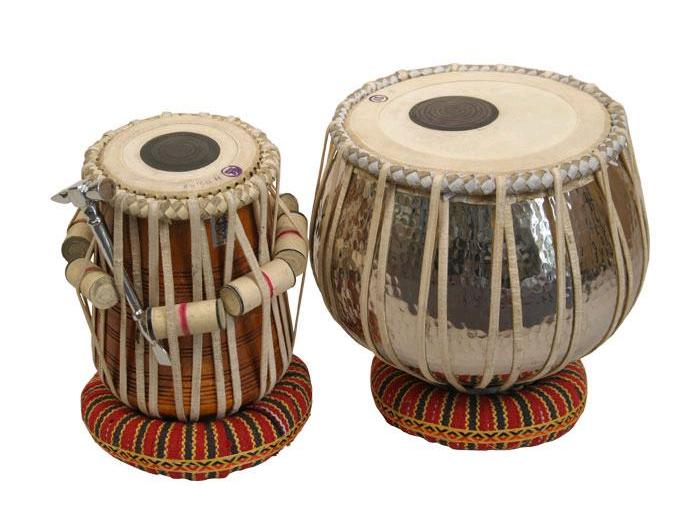

Student Tabla
The Tabla has been one of the most popular drums in Indian music. The Bayan, the Dugga or the bass drum is larger and hence lower pitched and the Dayan, is small hence the high pitched drum. The student Tabla has a lighter Dagga (than the professional Dagga) which is perfect for beginners.
Student Tabla Specifications:
o Handmade Pudis and handwoven gajras.
o 2.2 Kg Copper Dugga with chrome finish.
o Special Rosewood Dayan (Treble - Right Wooden Drum) Head 5 to 5.5 Inches Height 10 to 11 Inches.
o Student grade Instrument.
o Package Includes: Base rings, Hammer, Small wooden gattas for tuning, Skin covers
o Quality tested by Ultimate Guru
o Made in India.
o HDP Cases for flight travel can be purchased seperately.
o Height of bass drum: 11 inches
o Height of treble drum: 10 inches
o Bass Drum Diameter 10.5 inches (including gajra)
o Treble Drum Diameter 7 inches (including gajra)
o Weight : 2.2 + 3 (Kg) Bass and treble drum together